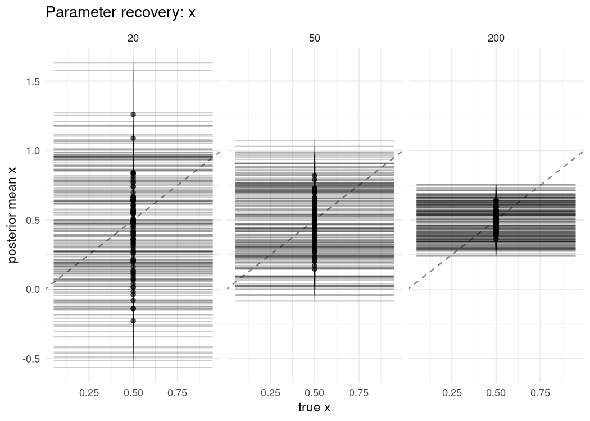

Overview
bayesim is an R package for running simulation studies of Bayesian models: parameter recovery, calibration checking via simulation-based calibration (SBC), model comparison, and method evaluation.
A study is declared as a grid of data-generating conditions, models, and replicates. bayesim expands the grid into tasks, executes them (sequentially or in parallel, with checkpointing and bounded memory), and summarizes the results as the performance measures recommended by Morris, White, and Crowther (2019) — bias, empirical SE, MSE, and coverage, each with its Monte Carlo standard error.
Main features:
- Deterministic reproducibility: each task receives its own L’Ecuyer-CMRG RNG stream derived from a single study seed, so sequential, parallel, and resumed runs produce identical results.
- Simulation-based calibration with prior-predictive and inverse-forward-sampling generators, ESS-aware rank thinning, and ECDF plots with simultaneous confidence bands (Säilynoja, Bürkner, and Vehtari, 2022).
- Performance measures with Monte Carlo standard errors; LOO-based metrics follow their reference implementations in the loo and brms packages.
- For brms studies, a model bank compiles each distinct Stan model once and reuses the binary across replicates.
- Parallel execution via mirai, checkpoint/resume for long runs, and retention profiles to bound memory use.
- Extensible fitters and metrics. The built-in
LinearRegressionFitter()performs exact conjugate inference, so the documentation examples run without a Stan installation.
Installation
bayesim is not yet on CRAN. Install the development version with:
# install.packages("pak")
pak::pak("sims1253/bayesim")For brms- or Stan-backed studies you additionally need brms and/or cmdstanr with a working CmdStan installation.
Example
A small coverage study: does a 90% credible interval cover the truth 90% of the time, and how does estimation error change with sample size?
library(bayesim)
# Data-generating function. The engine restores a per-task RNG stream before
# each call, so the function can simply consume the ambient RNG state.
gen <- function(data_spec, task_ctx) {
x <- rnorm(data_spec$n)
y <- 1 + 0.5 * x + rnorm(data_spec$n, sd = data_spec$sigma %||% 1)
list(
train = data.frame(y = y, x = x),
response = "y",
true_params = c(Intercept = 1, x = 0.5, sigma = data_spec$sigma %||% 1),
vars_of_interest = c("Intercept", "x", "sigma")
)
}
# 3 sample sizes x 1 model x 100 replicates = 300 tasks.
config <- simulation_config(
data_grid = data.frame(n = c(20, 50, 200), sigma = 1),
fit_grid = data.frame(model = "linear"),
data_generator = gen,
fitter = LinearRegressionFitter(), # exact conjugate posterior
metrics = list(
posterior_summary_metric(prob = 0.90),
coverage_metric(prob = 0.90)
),
n_replicates = 100L,
seed = 42L
)
result <- run_simulation(config, workers = 2, progress = FALSE)
#> ℹ Starting simulation with 300 tasks
# Estimator performance with Monte Carlo standard errors.
performance_measures(result, by = "data_n")
#> # A tibble: 54 × 6
#> data_n estimand measure value mcse n_sim
#> <dbl> <chr> <chr> <dbl> <dbl> <int>
#> 1 20 Intercept bias -0.0235 0.0239 100
#> 2 20 Intercept emp_se 0.239 0.0170 100
#> 3 20 Intercept mse 0.0573 0.00856 100
#> 4 20 Intercept model_se 0.204 0.00366 100
#> 5 20 Intercept coverage 0.83 0.0376 100
#> 6 20 Intercept n_sim 100 NA 100
#> 7 50 Intercept bias 0.0178 0.0125 100
#> 8 50 Intercept emp_se 0.125 0.00889 100
#> 9 50 Intercept mse 0.0158 0.00191 100
#> 10 50 Intercept model_se 0.137 0.00158 100
#> # ℹ 44 more rowsTrue parameter values are recorded per task, so parameter recovery can be plotted directly:
plot_recovery(result, "x", by = "data_n")
Studies backed by brms or raw Stan programs use the same interface through BrmsFitter() and CmdStanFitter(); see vignette("brms-studies") and vignette("custom-fitters"). Calibration checking is described in vignette("sbc-and-calibration"), and guidance on designing studies (estimands, number of replicates, reporting) in vignette("design-of-simulation-studies").
Related packages
- SimDesign and simhelpers are general-purpose simulation frameworks. bayesim focuses on Bayesian workflows: posteriors, calibration, LOO, and Stan-aware execution are built in.
- rsimsum analyzes existing simulation results. bayesim runs the study and reports the same Morris et al. performance measures; its MCSE formulas follow rsimsum.
- SBC implements calibration checking. bayesim provides SBC as one metric within a general study engine.
Getting help
Bug reports and feature requests: github.com/sims1253/bayesim/issues.
References
- Morris TP, White IR, Crowther MJ (2019). Using simulation studies to evaluate statistical methods. Statistics in Medicine, 38(11), 2074-2102.
- Talts S, Betancourt M, Simpson D, Vehtari A, Gelman A (2018). Validating Bayesian inference algorithms with simulation-based calibration. arXiv:1804.06788.
- Säilynoja T, Bürkner PC, Vehtari A (2022). Graphical test for discrete uniformity and its applications in goodness-of-fit evaluation. Statistics and Computing, 32(2).
- Vehtari A, Gelman A, Gabry J (2017). Practical Bayesian model evaluation using leave-one-out cross-validation and WAIC. Statistics and Computing, 27(5), 1413-1432.